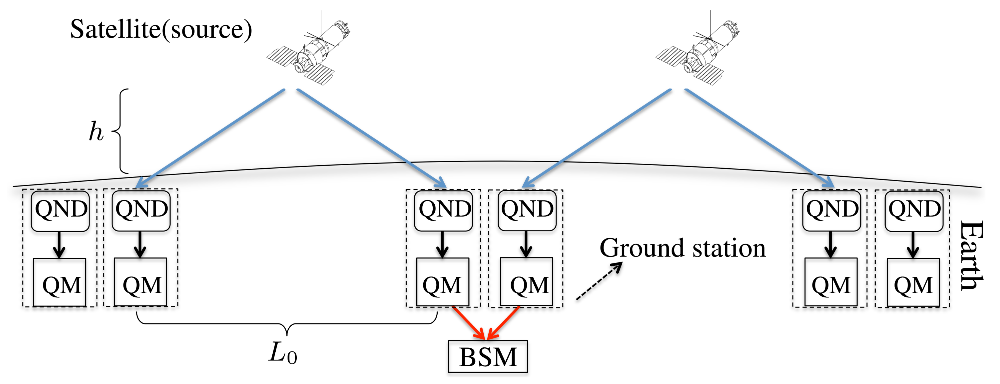
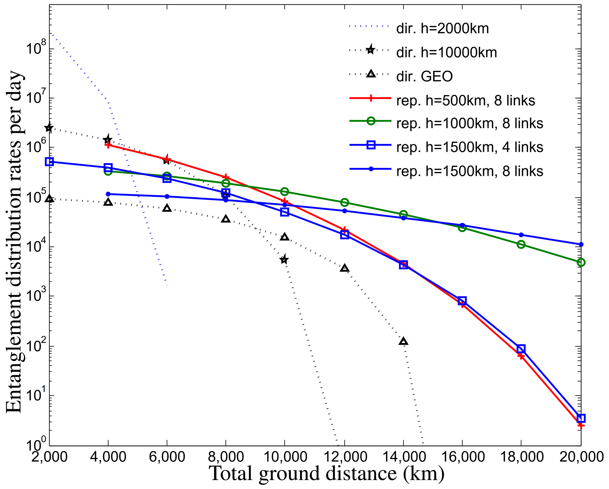
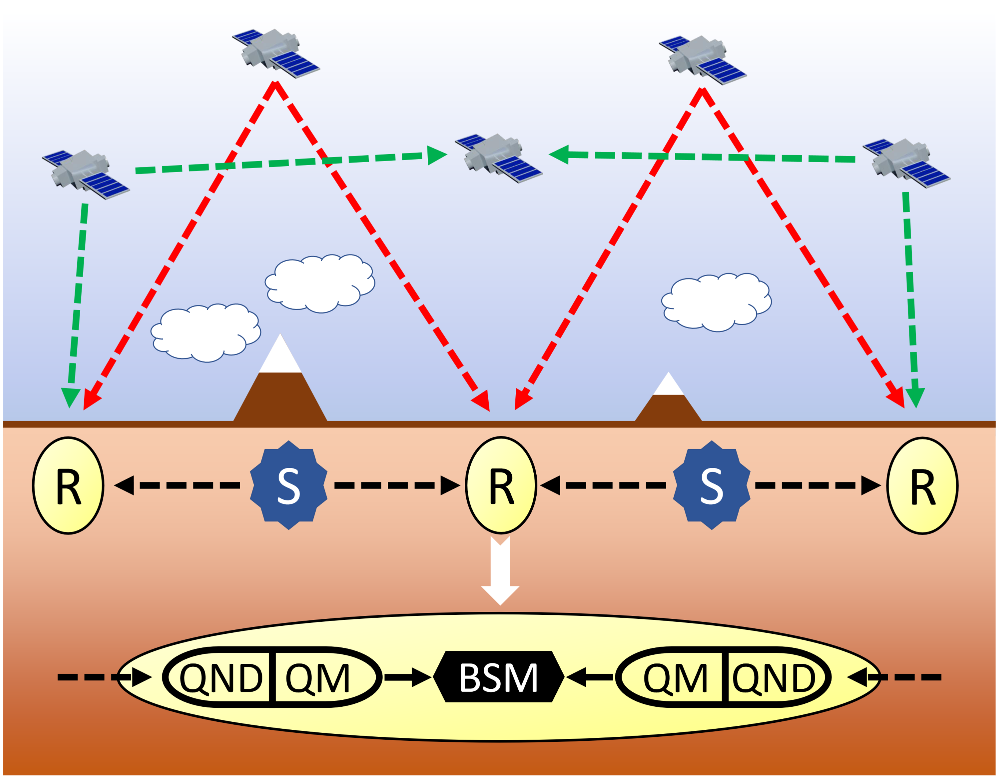
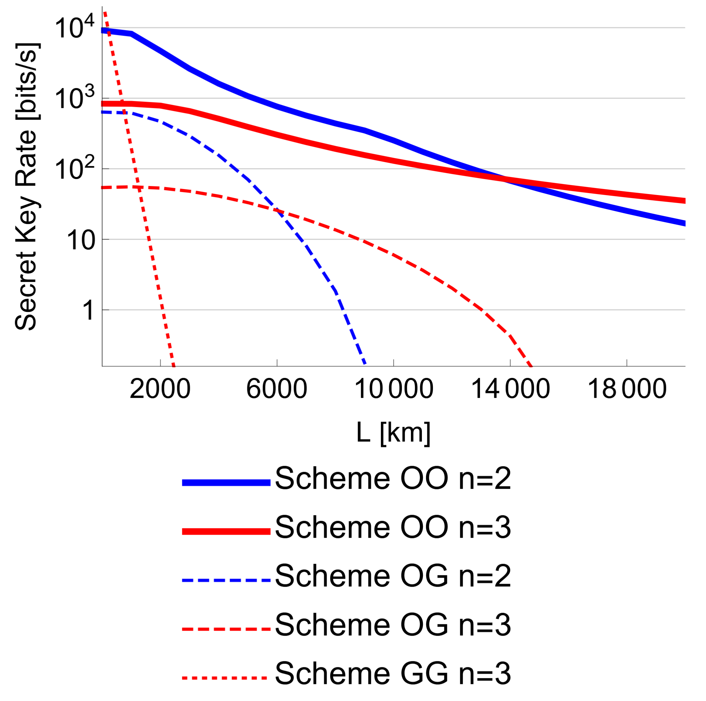
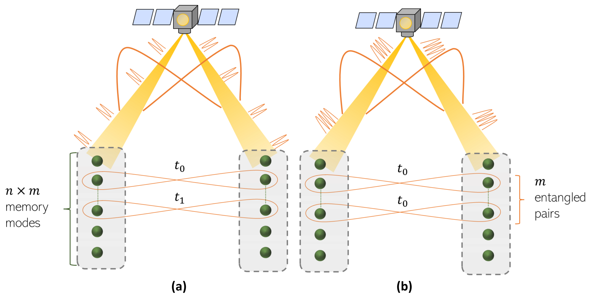
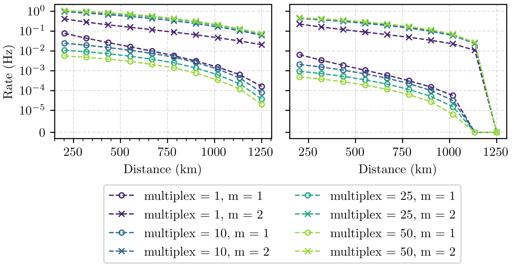

Theory Spooky action at a global distance: analysis of space-based entanglement distribution for the quantum internet doi.org/10.1038/s41534-020-00327-5
How to model the satellite-to-ground optical link?
Given a particular configuration of ground stations, what is the optimal number of satellites needed in order to achieve a desired average entanglement distribution rate to the ground stations?
To what extent do satellites offer a rate advantage over ordinary ground-based quantum repeater schemes?
Use LEO satellite downlinks to create relatively long but manageable elementary entangled links, then use ground-based memories and entanglement swapping to connect several such links into a global-scale entangled pair


shows that this architecture could distribute entanglement over global distances with only a moderate number of satellite links
Boone et al. put the memories on the ground to avoid complex satellite hardware, Liorni et al. put the repeaters in space to avoid the atmosphere and ground-station constraints


higher predicted BB84 secret key rates at the cost of technological complexity
Instead of generating Bell pairs one at a time as ordinary photonic qubits, use high-dimensional time-bin photonic qudits so that one successful satellite transmission can create multiple Bell pairs simultaneously between ground-station memories


leads to orders-of-magnitude rate improvements over qubit-based operation for Micius-like satellite links
Satellite-assisted quantum communication with single photon sources and atomic memories doi.org/10.1103/z1vn-11m5
Proposes a satellite-based quantum repeater architecture using trapped neutral atoms as both single-photon sources and quantum memories
Entanglement is generated through atom-photon emission and photonic Bell measurements
Entanglement swapping is performed nearly deterministically using Rydberg-mediated atomic gates
Avoids the severe rate penalty of probabilistic optical Bell measurements